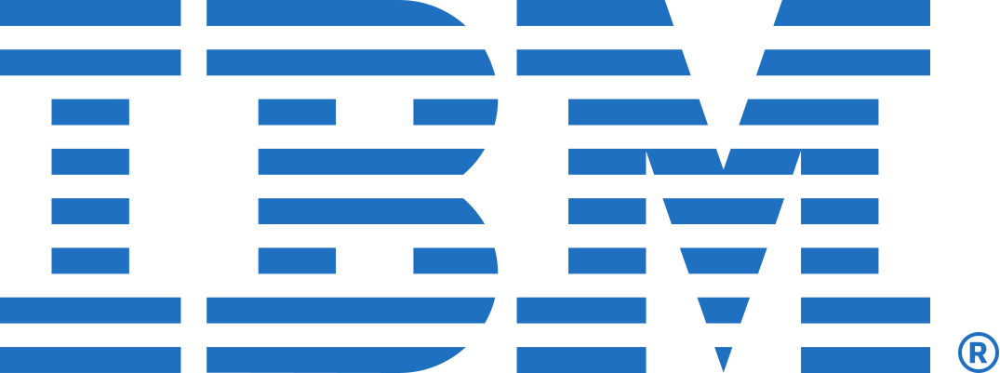
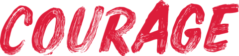

Inbound was manual and slow: every lead was checked and enriched by hand, so first replies took about a day. There was no outbound and no clear ICP. The team took any customer, in any market, on any tier, and discounted hard to win. Without a clear view of where the product created most value, nobody had the confidence to hold price. A new AI agent product was about to launch.
What I did
Went through all the data and spoke to the whole team: which deals closed fastest, which brought the most value, and which customers got the most from the product.
Found that value grew with scale: companies with large apps and many users saw returns many times their spend, while small accounts took as much effort for a fraction of the revenue.
Reset the ICP around larger companies with apps, stepped back from markets where deals were small, slow and heavily discounted, and shifted focus quickly when regional demand changed.
Rebuilt pricing for the AI product: from a model with many variables to a simple usage-based model, priced on AI usage the way the AI model providers price theirs, so it was easier to buy and grew with the value customers got.
Built an AI agent on inbound with HubSpot, Clay and Claude Code. Every form fill is researched, enriched, profiled and qualified within minutes, a reply is drafted and a call set up, and the best leads trigger an alert for an SDR to call straight away.
Built outbound from zero, using app store data, Clay and AI to find companies where the product could make a big difference. In the first month, the first run reached about 500 accounts and 4,000 contacts. Then came a lot of testing and iteration on the message by person, company and timing, with results building over the months after.
Owned the forecast, and set the quotas and performance framework for the team across five regions.
After
Inbound leads becoming sales-qualified went from ~25% to ~40%. First reply went from about a day to 5 minutes, which freed the SDRs to focus on outbound.
The scale · 2024–25
Arbonics
Forest carbon · Backed by Plural · Head of Sales & New Markets, through my consultancy
~€10Min estimated contract value won in 12 months, on the company's own model
€0.1M → €5.4Msales a quarter in nine months (37×)
2 → 12sales team hired and trained, SDRs and AEs in every market
5 launchestwo products across Estonia, Latvia, Lithuania and Sweden
Three generalist salespeople, each working alone on round-robin inbound leads of poor quality. Outbound was meant to happen, but nobody knew how or who to target. The CRM was half-filled and nothing was documented. A new product in a traditional market, sold to people with a few hectares of forest on the side, on a long contract nobody wanted to sign.
What I did
Qualified up. Small plots took as long to close as large ones, so we moved from part-time landowners to businesses and professional owners. For a team hungry for any sale, that was a real cultural shift.
Used data to find the land that would qualify, found who owned it, and went to them with outbound.
Sold it as an investment: return on investment, and carbon credit income on top of a forest they were already growing, with models that showed the return.
Replaced a long 50-year contract with a one-page first step. Same commitment, but the owner kept control and could pull out. The detail moved to a second contract once the land was agreed.
Rebuilt the team around an SDR and an AE in every market, plus a key account manager, a team lead, a head of expansion and quality checks on every deal. Grew it from 2 to 12, and moved from Pipedrive to HubSpot as one source of truth.
Built a cross-market function selling to investment funds, which already think long-term about land and saw carbon credits as a new revenue stream. Senior meetings came faster, and several funds signed, each bringing roughly 700 to 5,000 hectares over time.
Changed the sales culture: hard, shared goals the whole team got behind, and the freedom to meet landowners in person, which closed deals faster.
Launched new markets with people on the ground: legal checks and an early outreach plan in each, and in Sweden a local partner who already knew most of the landowners, on shared commission.
After
I led the sales function as quarterly sales grew 37× in nine months: about €10M in estimated contract value won in 12 months, on the company's own model. The same process now brought in far bigger deals: in Latvia, where we piloted the SDR and AE split, the average deal grew from about 5–10 hectares to around 70 at its peak. The average sales cycle fell from 75 to 16 days. 85% of everything Arbonics had ever sold was won while I led sales.
Estimated contract value uses Arbonics' own model of about €1,000 per hectare contracted. Quarterly sales grew from 144 to 5,393 hectares in nine months.
The scale · 2019–21
Wheely
Premium chauffeur platform · Backed by Concentric · Global Head of B2B Sales & Customer Success
+75%UK sales in my first two months
912%B2B recovery from the Covid low, April to December 2020
~$500ka month in B2B revenue I owned, across the UK, France and Russia
A small UK business-travel arm inside a consumer app. Then Covid emptied the roads.
What I did
Started as a consultant on the UK market. Took on every stalled lead and deal in the CRM and ran follow-up campaigns until they signed and took their first journeys.
Reused my Pronto playbook from the bottom up: found riders expensing trips to their employer, grouped them by company, and asked them to introduce the right person. Then went top down with the evidence: this many of your people already ride with us, even at companies signed with a competitor.
Became Head of Sales UK, then Global Head of B2B Sales and Customer Success across the UK, France and Russia, adapting the approach to each market, and prepared the market plan for a Dubai launch.
Through Covid, called every client and made safety the reason to choose us: cleaning after every journey, masks, sanitiser, and still a premium experience, so offices could reopen with confidence.
Won investment funds and large companies by inviting them to try us on our account, then onboarding every level of the organisation, through legal and procurement sign-off, and proving reliability again and again.
Moved 300+ corporate clients to a new UK entity.
After
UK sales up 75% and journeys up 118% in my first two months. B2B recovered 912% from the Covid low (April to December 2020). The biggest accounts spent around $30,000 a month.
Zero to one · 2015–16
Pronto
15-minute healthy food delivery, London · Backed by Playfair Capital and Seedcamp · Head of B2B Sales & Partnerships
0 → 60%of company revenue from the B2B business I built
40%of early revenue through Seamless, one of its best-rated providers
A consumer app with a cult following and no business customers at all.
What I did
Went in through the consumer and worked up. I looked at the work email domains of our biggest fans, found their employers, and pitched: “your team already orders from us, so how about lunch for the whole office?”, with offers to feed whole teams.
Built an office lunch service around a gap nobody filled: staff ordered by a cut-off and everything arrived together at lunchtime, hot and healthy. For some offices it replaced the canteen.
Won clients including Wise, a regular for team lunches, and Telefónica, which came in looking to replace its in-house canteen.
Used my network to get Pronto onto Seamless years before others were allowed on. The clincher: many of Seamless's own clients were already ordering from us off the platform. We became one of its best-rated providers.
After
B2B grew from zero to 60% of company revenue, and Seamless alone brought 40% of early revenue. Pronto later closed when its next funding round didn't come through. The B2B playbook is one I've reused ever since.
Before start-ups
Trained in big-company discipline.
Where I learned how large organisations plan, sell and deliver.
Credit SuisseKept the Chief Financial Office aligned through a move to new systems. Rated AAA, Exceptional, which was rare.
Lloyds Banking GroupHelped create TSB, a bank with 5 million customers on day one: 200+ customer and legal documents ready and signed off.
Studio SixLloyds Bank rebrandRan the Lloyds Bank rebrand account at Studio Six, aged 23: one of the UK's biggest rebrands, across the whole branch network.

IBMSales operations for technical sales. Global recognition for reshaping how the team presented itself, in a department named best in class.
Oxygen AcceleratorEntrepreneur in ResidenceThree months side by side with 14 start-ups at Oxygen Accelerator: market research, testing ideas and getting to market.
British Army ReserveIntelligence, HACLance Corporal, intelligence, Honourable Artillery Company, 2019–2025
My own venture
The one that taught me most.

I co-founded Courage Global, which grew out of a community I started called Go Getters. We spent months perfecting the website, the brand and the concept, and far too little time in front of customers. It didn't work.
The lesson I've used ever since: the idea comes from you, but the market tells you if it works. Choose your co-founder carefully, be clear on what you're building and why, test with customers early, and change because of what they tell you. Focus on sales and cash, not concepts.
Think clearly. Move fast.
Tell me where your sales are stuck.
A short intro call. You leave with at least one thing to fix this month, whether we work together or not.